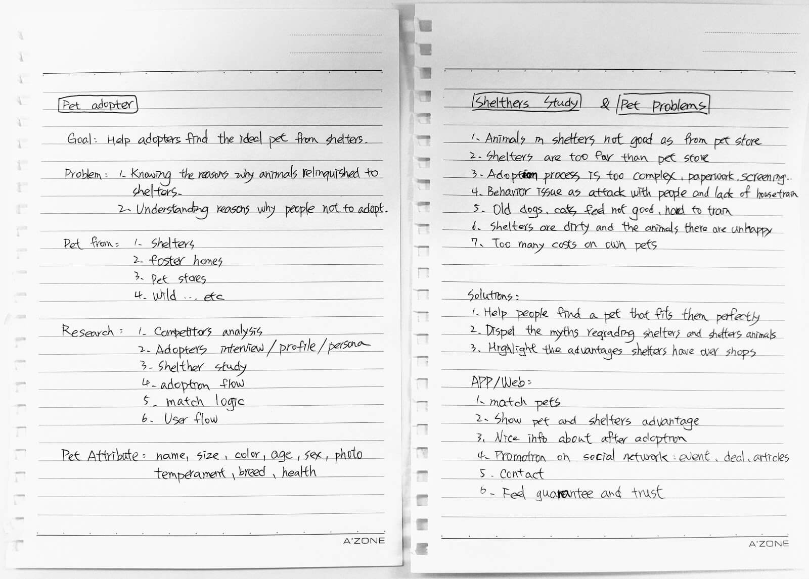

Pet Adoption
Google Design Exercise
Millions of animal are currently in shelters and foster home waiting for adoption. Design an experience that will help connect people looking for a new pet with the right companion for them. Help an adopter find a pet which matches their lifestyle, considering factors including breed, gender, age, temperament, and health status.
My role: User Researcher, Interaction Designer
Work Process
- Research
Market research, Interviews, competitive study
- Strategy
Brainstorm, Persona, Sketch user flow
- Execution
Wireframes, Visual design, Prototype
- Validation
Usability test, feedback
Research
Brainstorming ideas
I started out with some brainstorming to explore the topic of the design exercise and gather my initial thoughts. I did some competitor research to see how other products were tackling this issue and taking notes of the things I did and didn’t like. Just roughly penning down what features the app would need, what information would need to be shown, and what pieces of content should be in focus.
Find the problem
- 36% of shelter dogs and cats end up being euthanized every year (around 1.3 million)
- There are 65% of people believe that shelter animals are abused, malnourished and sick.
- 32% of given up reasons could prevent through education and awareness.
Interview with stakeholders
I survery with potiental adopters to help me build a deeper understanding of why the people choose pet shop instead of the shelter. Also interview with shelter assistanct to know real adoption process in detail. Then base on those insights and built main persona.
Hypothesis
Adopters who are educated about the long-term benefits of accurate pet compatibility will make better and more informed decisions about the pets they adopt. This reduces the number of pets going back into shelter care and alleviates the strain on shelter workers so they can spend more time evaluating animals issues and finding the right adopters.
Strategy
Goals
- Help people find a pet that fits them perfectly.
- Highlight the advantages shelters have over shops.
- Keep adopter positive learning knowledge.
How can we measure success for this experience?
- Decreased number of pets being euthanized.
- Decreased number of pets being taken to Pet Shelters.
- Increase pet adoption numbers nationwide.
- Wider community knowledge about the benefits and rewards adoption.
- Reduce any stigmas surrounding adoption.
After reviewing all the possible ideas, the best solutions were those that aligned with the user's long-term goals of successful pet adoption.
Sketches User flow
The needed features, actions and pieces of information were already pretty clear after the phases above, so I could jump straight into a quick sketch to map out the user flow. I tried to put in all the features I was planning, and most of it already felt logical at this point.
After a couple of paper iterations I had the general idea ready, so I switched to Sketch, where it’s easier to move things around.
Now we know what we want to achieve through the UI, so we can start designing.
- A compatibility questionnaire that accurately finds ideal pet.
- Making pet education part into adopter’s life.
- Providing users with the right tools and knowledge before they adopt.
Execution
Design an experience that increases pet adoption from shelters by accurately connecting pets to users personality and lifestyles.
Wireframe
This is where I do most of my critical thinking about what the user needs, and design a detailed oriented user experience. My goal is to solve all the problems before I start any visual design.
Onboarding
A good experience should not force users into a hard are at first, so I give them the option to take the questionnaire now or skip at the end of the onboarding. If the users skip that, they are taken to My Pet page. This is an important screen because we can reinforce the value of pet education and provide users with content on:
- How important questionnaire for adoption pet.
- Metaphor of “My Pet”, “Already have a pet?” to enhance enthusiastic for ownership.
- Success stories.
They could be more positive attitude to take the questionnaire.
Questionnaire
During competitor survey, I realize to have a good match, there are 4 sections of pets and adopters should be match each other.
- Living environment
- Lifestyle
- User personality
- Pet behavior
Once the user completes the questionnaire, we congratulate the user gets a view with an artificial loading indicator. In cases like this it’s important to increase the perceived value of the product. If the user spends ~5 minutes answering questions, but the results appear instantly, they might feel as if the product is not really doing anything and all his work was for nothing. Showing a nice loading animation for just a few seconds will prevent this.
Find Pets
The Find Pets provide filters available are distance, match and type of animal. Someone who is looking for a dog and is willing to put in some effort, can set the type of animal to Dog and set the distance to 100km. This makes sure he’ll easily find the best match for him.
Pet Cards
Animals who are a good match for the user will be shown at the top of the list. Each card also shows a summary of the animal’s name, breed and some description of feature or story and the match percentage. I put the favorite in the FAB because we want to encourage the user to maintain a shortlist.
Pet Profiles
This is the most important screen to design because it's the where users make their evaluation. We show the key information at below the images, then reinforce the compatibility matching to inform. Users will also want to see details their most concerned about with pet adoption such as the pet's background, it's personality, behavior, and medical history.
Not only provide multi images to swipe but also there is a video about the pet, once click will display the movie clip to get more feeling for animals.
Shelter Information
Bottom of the layout, the user can find information about the animal’s current home. To help us achieve goal 2, it has pictures of the shelter to show that it’s way nicer than most people think. Additionally there’s a short text about the animal from one of the employees. This humanizes the shelter and at the same time shows that the employees care for the animals and treat them well.
Feed
Base on data and interview, there are many returns to shelter of use case after adopter, to reduce these problems, we provide the POSTS and EVENTS, not only for search events, but also integrate the posts of other pet owner life experience such as play with cats, the story with lovely partners and participate with group events to improve relationship and pet skills. And the owners could make more friends with each other to share and solve pets topic.
In this part, it pretty similar with social network app, I won’t go into detail. Just mention it, for the long-term, finish an adoption and reinforces adopters lifestyle are both important for shelters.
Visual Design
High fidelity screens were created and iterated upon from the initial wireframes and the Material Design guidelines were referenced to create a simple, bold and graphic interface.
Design Direction
- Choose a light orange color theme to empathy and compassion and make sure vibrant and gender balance.
- Reference Material Design components, iconography and structure.
- Use real images over illustrations due to time restraints.
I like to design the visual from the beginning where I could empathy in the real user process. Use passionate color and keep it simple and easy to read.
And here I put the Facebook login, because there are not only many foster homes, shelters posting their animals, but also many potential adopters looking for the pet in these groups.
After finish the questionnaire, it should display a great animation to feedback their spent time a lot. Due to time limitation, I just put a white circle to stand for it.
Simple scannable information is key to the user so they can quickly evaluate what they need to know about adopting this animal.

Book a Walk and message are both connect with shelter assistants, and there is also provide simple instant message near the text input to guide adopters to reply.
After the users has adopted the pet, there is an entry of register to reinforce their ownership. Once they setup the lovely pet, be a right time to provide useful information is a big plus to keep users browsing the application, discover great events and activities.
Prototype
I have created prototype via InVision for this design exercise.
Please note
- The prototype is optimized for Android device of inVision and viewed in Chrome. (Other devices may not be perfect to review)
- I kept the prototype light by not adding ‘Setting’, ‘Login’, ‘Register’. For questionnaire I also only put it in one page to represent whole question flow.
- Feature such as ‘filter’, ‘share’ and ‘search’ has been left out due to InVision limitations.
Reflection
Looking back on the project now it would’ve been nice to conduct additional tests with more participants. Doing so would have revealed deeper usability issues.
Continuing to educate new adopters and improve knowledge current masters of pet are long term target. Via social network such as Facebook and Twitter to promote will increase people using shelters as a source for save the animals, rather than buying from pet shop.
Would I do anything over?
An idea to improve layout for Google Maps for shelters, where the employees can upload pictures of all the individual animals in an organized way (similar to how restaurants now have a “menu” section).